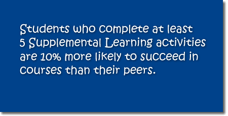

Readers often get distracted from their readings--they go into a "reading coma"--and lose track of what they are reading. When readers are distracted, they either continue reading without having grasped the content of the reading or, if they realize that they got distracted, backtrack in the text to the last part they remember.
Although becoming distracted while reading is normal, there are some strategies that readers can use to stay focused on the text. In this learning activity, you will learn how to apply reading strategies to reduce the wasted time, the frustration, and the missed information caused by the "reading coma".
|
Student Learning Outcomes
By the end of this activity, you should be able to:
Begin the ActivityOnce you have all the needed materials, you may procede to the activity by clicking on the button below. If at any time you need help, please ask a tutor. Click here to begin. |
Did you know?

 
 |